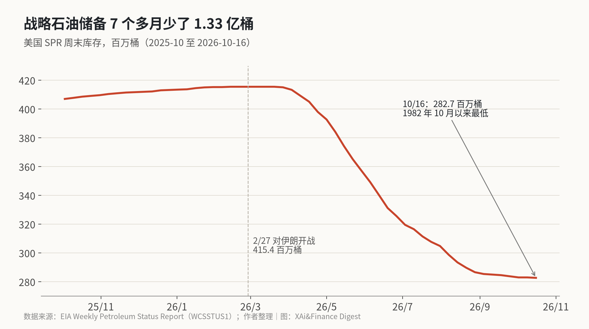
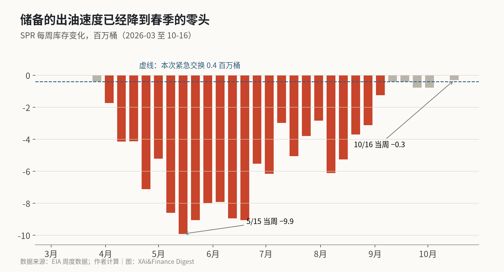

40 万桶只够美国用 27 分钟：这次动用战略储备，其实是给一家炼厂救急
周五美国能源部宣布从战略石油储备紧急调出至多 40 万桶原油，同一天布伦特收在 116.72 美元，4 月底以来最高。把这 40 万桶和储备的周度数据放在一起算，看到的是储备已经压不住油价了。
周五（10 月 23 日）晚上，X 上同时刷屏的有两条：一条是“美国紧急释放战略石油储备”，一条是“布伦特冲上 117 美元”。两条放在一起，很容易读成“政府出手压油价，但油价还在涨”。
我想算清楚的是这 40 万桶到底有多大，以及它能不能对油价起作用。办法是把能源部公告、EIA 的周度库存和路透的结算价摆在一起对。
算完的结论是：这 40 万桶不是投向市场的，而是借给一家炼厂应急；更重要的是，储备本身的出油速度已经从 5 月每周近 1,000 万桶降到每周几十万桶。油价接下来看的是霍尔木兹海峡和沙特的局势，美国的战略储备已经帮不上什么忙。
40 万桶有多大
能源部的公告写得很具体：从路易斯安那州的 West Hackberry 储油点调出至多 40 万桶，立即交给 Phillips 66 的 Lake Charles 炼厂，弥补这家炼厂原油到货的临时中断。这是一笔“交换”，炼厂日后要把借走的油还回来，还要多还一部分作为利息。
Lake Charles 炼厂的日加工能力约 26.4 万桶。40 万桶够它开工大约 1.5 天。
放到全国看就更小了。EIA 数据显示，截至 10 月 16 日当周，美国成品油日均供应量是 2,123.1 万桶，可以粗略理解为全国一天的石油消费。我拿 40 万桶除以这个数，得到约 27 分钟。
所以这条新闻的准确读法是：一家炼厂的原油到货出了问题，政府从储备里借给它一天半的原料，让当地汽柴油供应不断档。它和“向市场投放储备、压低油价”是两回事。
储备还剩多少

真正值得看的，是这个储备本身。EIA 周度数据显示，10 月 16 日当周，战略石油储备库存 2.827 亿桶，比前一周少 30 万桶，是 1982 年 10 月以来的最低水平。2 月 27 日美国对伊朗开战那一周，储备还是 4.154 亿桶。七个多月里少了约 1.328 亿桶，接近原来的三分之一。
按能源部约 7.14 亿桶的设计库容算，现在只装了不到四成。
FXStreet 的一篇分析把这些出库合同逐一翻了出来：今年出库的油全部是借出去的，没有一桶是卖掉的，借油的炼厂要在 2026 年到 2029 年之间分批归还，连本带息约 1.65 亿桶。也就是说，储备在接下来几年要从市场上往回收油，而不是往外放。
出油速度已经降到零头

我把 EIA 的周度库存做了差分，看每周少了多少。最多的一周是 5 月 15 日当周，少了 992 万桶，折合每天约 142 万桶。那时候储备确实在大规模补充市场。
从 9 月开始，每周减少都不到 100 万桶；最近一周只少了 30 万桶，折合每天约 4.3 万桶。
这次的 40 万桶，差不多相当于最近一周多的出库量。和 5 月那一周比，只有二十五分之一左右。
出库速度掉下来，有一部分是能源部自己的选择，也有一部分是硬件限制。FXStreet 引用美国政府问责局（GAO）6 月的报告：储备的设计出油能力是每天 440 万桶，截至去年 12 月实际只能做到每天 270 万桶，约为设计能力的 61%；而且库存越低，能抽出来的速度越慢。说白了，下一次真要大规模放油，量会更小、速度会更慢。
那油价为什么涨
周五的上涨和储备无关。路透的收盘报道说，布伦特收 116.72 美元，涨 3.55 美元，涨幅 3.14%，是 4 月 29 日以来的最高结算价；WTI 收 103.27 美元，涨 3.8%。这一周布伦特涨了 6%，WTI 涨了 2.3%。
驱动是供给风险。也门胡塞武装对沙特境内多处目标发动袭击，其中包括能源设施；周四沙特阿美下令疏散了位于达兰的总部；阿联酋又在乌姆盖万近海发现油轮泄漏。路透引用的一家华盛顿智库数据显示，10 月是霍尔木兹海峡及附近水域商船遇袭最多的一个月。
Lipow Oil Associates 总裁 Andrew Lipow 的原话是：通过霍尔木兹海峡运出的石油虽然在增加，但“随时可能改变”。
FXStreet 引用国际能源署数据，9 月经霍尔木兹海峡的石油运量约每天 1,090 万桶，而 2025 年约为每天 2,000 万桶。这个缺口是每天近 1,000 万桶的量级，比美国储备在 5 月最快时的出油速度大好几倍。我算到这里就明白了，储备从来就补不上这个缺口，现在更补不上。
看跌的一方在押什么
X 上看跌油价的人主要押两件事。
一是供给在恢复。美国财长贝森特周五发帖说，尽管伊朗试图干扰，波斯湾的石油出口已经恢复并超过冲突前水平。这是官方说法，我没有找到独立数据核对，先记下。
二是政治时间表。特朗普周五说美国可以“很快”结束与伊朗的冲突；中文区交易员 @TraderS18 的判断是，伊朗在 11 月 3 日中期选举前不太会收手，但选举之后，不管是伊朗暂停还是美国再打一轮，油价“基本就算走到头了”。路透还提到，首批运往美国的俄罗斯柴油预计 11 月 7 日到港，德国也开始从本国储备里招标出售柴油和原油。
这些都是可能压低油价的力量，但没有一项来自美国的战略储备。
看涨的一方说得更直接。@StockMKTNewz 转述 Paul Tudor Jones 上周的话：他做多原油，认为还能再涨 20 到 25 美元。这只是一位投资人的判断，不能当作预测，但它说明大资金在交易的是中东供给，而不是美国政府手里还有多少油。
油价看中东，不看华盛顿
这次 40 万桶是给一家炼厂救急，不是压油价的政策；美国战略储备已经从压油价的工具，变成了未来几年要往回收油的一方。油价接下来怎么走，要看中东的供给能不能恢复，不看华盛顿还能放多少储备。
落到数据上，有三个数能把这个判断坐实或推翻。
第一个是 EIA 每周三公布的储备库存。如果周降幅重新回到每周几百万桶，说明政府又开始大规模借油；如果出现周度增加，就是借出去的油开始归还，储备从“放油”转向“收油”。
第二个是布伦特和 WTI 的价差。周五收盘价差是 13.45 美元，布伦特对中东风险更敏感，价差走阔通常意味着海外供给更紧。
第三个是霍尔木兹海峡的实际运量。这是唯一能让油价明显回落的变量，比任何一次储备释放都重要。
X 上怎么看
结论 · 多空分歧：4 位看多，4 位看空，3 位中性/分歧。看涨的人盯着中东袭击和变薄的储备，看跌的人押波斯湾出口恢复和中期选举后局势降温。
▲ 看多4 位
▼ 看空4 位
观点为 X 用户当日公开帖子的中文摘要，忠于原文但有删减；标「未核实」的为预测、个人推测或单一来源说法。立场为人工判断。
数据来源
- https://www.energy.gov/articles/energy-department-authorizes-strategic-petroleum-reserve-exchange-support-fuel-supply
- https://www.newsquawk.com/headlines/us-doe-has-authorised-an-emergency-of-exchanged-of-up-to-400k-barrels-of-crude-oil-from-the-spe
- https://www.eia.gov/dnav/pet/hist/LeafHandler.ashx?f=W&n=PET&s=WCSSTUS1
- https://www.eia.gov/dnav/pet/pet_cons_wpsup_k_w.htm
- https://www.energy.gov/hgeo/opr/spr-quick-facts
- https://www.channelnewsasia.com/business/oil-prices-jump-3-houthi-attacks-oil-spill-highest-settlement-april-6484841
- https://www.fxstreet.com/analysis/the-us-oil-reserve-hit-a-44-year-low-now-the-barrels-are-coming-back-202610211839
- https://x.com/Polymarket/status/2113650541892952119
- https://x.com/SecScottBessent/status/2113742459708817430
- https://x.com/TraderS18/status/2113659527027638512
- https://x.com/Kalshi/status/2113675724150505750
- https://x.com/StockMKTNewz/status/2113419564151140625